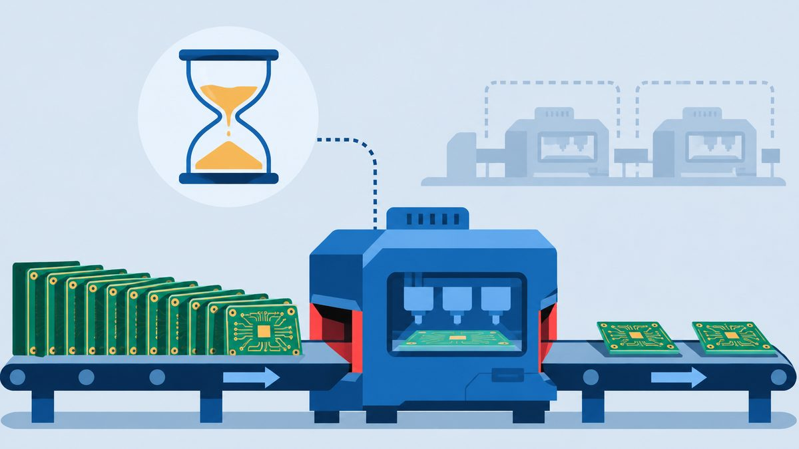

기판 장비 30개월 대기, 증설의 병목

[AI 생성 일러스트] 기사 내용을 설명하는 도식이며 실제 사진이 아닙니다.
- 일부 기판 가공 장비 납기가 약 30개월로 연장
- 일본산 정밀 구동 부품 부족이 장비 생산 제약
- 장비 확보 경쟁이 실제 증설 일정에 미칠 영향은 미확정
늘어난 주문을 장비 공급이 따라가지 못한다
AI 반도체에 쓰이는 FC-BGA 기판의 증설 경쟁이 제조 장비 확보 경쟁으로 이어지고 있다. 전자신문은 11월 25일 일부 기판 가공 장비를 주문한 뒤 받기까지 약 30개월이 걸린다고 보도했다. 평소 약 6개월이던 납기가 다섯 배 가까이 길어진 것이다. 모든 기판 장비의 평균이 아니라 일부 장비에서 확인된 상황이다.
일부 대형 기판 제조사는 선수금을 지급하면서 납품을 앞당겨 달라고 요청하고 있다. 정식 구매주문에 앞서 구매의향서를 보내 물량 확보를 시도하는 사례도 보도됐다. 장비 공급이 제한된 상황에서 주문의 시점과 자금 투입 여력이 설비 확보에 영향을 주는 모습이다.
이번 사안의 초점은 AI 수요가 주변 산업으로 넓어진다는 데서 한 단계 더 나아간다. 기판을 더 만들겠다는 투자 결정이 있어도 생산 장비를 제때 들이지 못하면 증설을 실행하기 어렵다는 구체적인 제약이 나타났다. 수요와 투자 계획 사이에 있던 병목이 장비 납기로 드러난 것이다.
칩을 연결하는 기판, 장비를 움직이는 부품
FC-BGA는 칩을 뒤집어 금속 돌기인 범프로 기판과 직접 연결하는 방식이다. 금속선을 사용하는 방식과 비교해 열을 내보내고 신호를 전달하는 성능이 우수하다. AI 반도체 칩 수요가 늘면서 이를 뒷받침하는 기판도 더 필요해졌고, 기판 제조사들이 생산설비 확충에 나섰다.
보도는 주요 업체로 일본 이비덴과 신코전기, 대만 유니마이크론을 들었다. 국내에서는 삼성전기가 주요 생산업체이며 대덕전자와 LG이노텍도 시장 확대를 추진하고 있다. 여러 제조사의 장비 구매가 겹치면서 접합·절단·금속화 등 생산공정에 필요한 장비 공급에 부담이 생겼다.
장비업체가 주문을 받는 것과 완성 장비를 출하하는 것 사이에도 제약이 있다. 첨단 장비에는 일본산 부품이 많이 들어가는데, 해당 부품업계의 생산능력이 제한적이라는 설명이다. 정밀한 위치 이동에 쓰이는 스테이지용 모터와 구동 부품, 서보모터, 드라이버, 컨트롤러 등이 수급난 품목으로 거론됐다.
장비 수주가 곧바로 출하 실적은 아니다
한 FC-BGA 접합 장비업체 대표는 평소 바로 살 수 있던 일본산 부품도 최근에는 약 반년을 기다려야 한다고 설명했다. 필요한 부품을 미리 확보하지 못한 장비사는 완성 장비의 생산에도 차질을 겪을 수 있다. 기판 제조사의 주문이 많아도 장비업체가 공급량을 곧바로 늘리기 어려운 배경이다.
이 구조에서는 기판 제조사와 장비업체가 서로 다른 부담을 안는다. 기판사는 설비를 확보하지 못하면 늘어난 수요에 대응할 생산능력을 갖추는 시점이 늦어질 수 있다. 장비사는 수주 기회가 늘어도 부품을 제때 받지 못하면 납품 속도를 높일 수 없다. 주문 증가만으로 양쪽의 생산 확대가 동시에 이뤄지는 것은 아니다.
반도체 제조 장비와 기판 제조 장비를 함께 공급하는 업체도 영향을 받고 있다. 보도에 등장한 업계 관계자는 두 분야의 주문이 한꺼번에 몰리면서 납기가 늦어진다고 설명했다. 같은 장비 공급업체에 여러 산업의 투자가 집중되는 경우, 기판 분야만의 수요 변화로 공급 여력을 설명하기 어렵다는 의미다.
기판 소재와 제조 장비는 별개의 제약
기판 생산에는 장비 외에 소재 문제도 있다. 11월 25일 반도체업계 보도에서 DS투자증권은 이수페타시스의 고성능 반도체용 기판 핵심 소재인 동박적층판(CCL) 수급 제약을 지적했다. CCL은 기판을 만드는 데 투입하는 소재이고, 이번에 납기가 늘어난 것은 기판을 가공하는 장비다. 두 사안은 제품과 공정 범위가 달라 같은 부족 현상으로 합쳐 볼 수 없다.
다만 두 사례는 생산 확대의 조건이 완제품 수요만으로 정해지지 않는다는 점을 보여준다. 소재가 들어와야 제품을 만들 수 있고, 증설에는 장비가 필요하며, 장비를 만들려면 다시 정밀 부품을 확보해야 한다. 어느 단계가 제약을 받는지에 따라 생산 확대가 늦어지는 이유도 달라진다.
제공된 보도에는 기판사별 장비 주문 규모나 확보 물량, 실제 증설 일정의 변경 내역이 없다. 일부 장비의 30개월 납기를 전체 기판 산업의 생산 지연 기간으로 볼 수 없는 이유다. 현재 확인된 변화는 장비의 공급 속도가 주문 증가를 따라가지 못하고 있다는 점이며, 이것이 기판 출하에 미칠 구체적인 영향은 아직 확인되지 않았다.
앞으로 볼 변수
- AI발 장비 수급난, 반도체 이어 기판 제조 현장까지 덮쳤다 · 전자신문 · 2026-11-25
- 삼전하닉 8% 급락…젠슨 황 복귀 효과 하루 만에 사라졌다 [칩칩폭폭] · 네이버뉴스 · 2026-11-25
이 포스팅은 쿠팡 파트너스 활동의 일환으로 수수료를 제공받습니다.